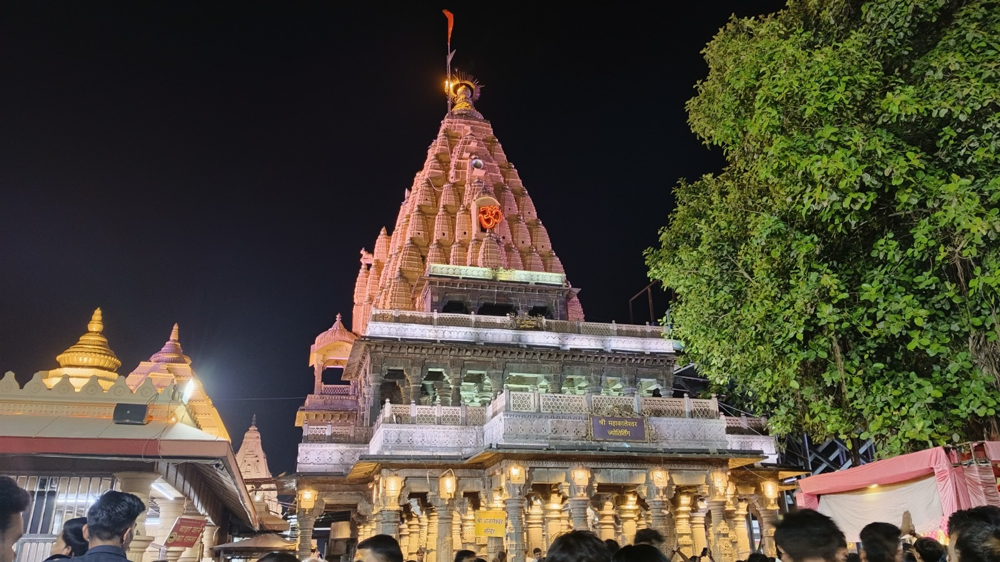

The 4 AM ritual at Mahakaleshwar is the reason a great many people come to Ujjain at all. It is also the part of the trip most often got wrong — usually by booking too late, or paying the wrong website.
Bhasma Aarti is performed daily at 4:00 AM, before the temple opens to general darshan. It is the only aarti of its kind among the twelve Jyotirlingas, and entry needs a pass issued by the temple administration in advance.
Book only on the official portal: shrimahakaleshwar.mp.gov.in
Passes are issued by the temple administration alone. There is no authorised third-party seller, no agent quota, and no hotel or homestay — including us — that can issue one. Several sites rank well on Google for "Bhasma Aarti booking" without being the temple's own. If a site asks for money to "arrange" a pass, be careful.
The booking window opens exactly 30 days before the date you want. Popular dates — Mondays, Shravan, Mahashivratri, festival days — can go quickly, so set yourself a reminder for the day the window opens rather than deciding a week before you travel.
You register on the official portal with the details of each person attending. The charge is a nominal amount per person (widely reported at around ₹200), collected by the temple. Each pass is tied to the identity document you register with, and is not transferable — you cannot buy a spare and pass it to a friend.
This is where people underestimate the aarti. Pass holders are expected at the Bhasma Aarti gate for biometric verification and security checks in the window roughly between 1:00 and 2:00 AM — not at 4 AM when the aarti begins. Queues, verification and seating all happen in the hours before.
In practice that means you are leaving your accommodation somewhere around midnight to 1 AM. If you have travelled all day to reach Ujjain, you effectively get very little sleep, which is worth planning for rather than discovering on the night.
Why staying close by matters more than it sounds. At 1 AM there is little traffic, and the drive from our flats in Sunrise City is short — guests put us at roughly 10–15 minutes from the temple. Coming back at 6 AM to a flat with your own kitchen, hot water and a bed to sleep it off in is a different experience from checking out of a hotel room at 10 AM.
The aarti takes its name from the sacred ash — bhasma — offered to the Jyotirlinga in the early morning. It is a dense, intense, deeply atmospheric ritual, and for many visitors it is the emotional centre of the whole trip. One guest described their Mahakaleshwar darshan to us simply as "soulful and unforgettable".
A traditional dress code applies for those entering the inner sanctum area, and rules on clothing, phones and photography are set and enforced by the temple. These do get revised, so check the current requirements on the official portal when you book rather than relying on a blog — this one included.
The temple has moved Bhasma Aarti booking fully online. The offline permit counter that used to issue passes a day in advance at the temple has been closed, and that quota has been converted into online Tatkal slots instead.
The Tatkal window opens at 8:00 AM for the following day's aarti, on the same official portal. It is worth knowing about if your plans firm up late, but treat it as a fallback rather than a plan — the slots are limited and go quickly.
Because the offline counter is closed, turning up at the temple hoping to buy a Bhasma Aarti pass on the day does not work. Anyone offering to sell you one in person is not selling something the temple issues.
Bhasma Aarti is not the only thing you can book. The temple's online services now cover several rituals, and for many visitors Sheeghra Darshan is the more practical one — a paid fast-track pass that lets you take darshan without standing in the general queue, which on a busy day is the difference between a half-hour and half a morning. It is widely reported at around ₹250 per person; confirm the current rate on the portal.
Booking any of these needs an account on the portal — you log in with a mobile number first. The temple also runs two guest houses (Atithi Niwas) and an Annakshetra serving free meals to devotees.
Temple helpdesk: 1800 233 1008 (toll-free), or 0734-2550563 / 0734-2559277.
If something about your booking isn't clear, ask the temple directly rather than an agent. They are the only ones who can actually answer.
It is not the end of the trip. General darshan runs through the day, and the temple is open long hours; going early in the morning or later in the evening avoids the worst crowds. The Mahakal Lok corridor is worth unhurried time in its own right, and the Kshipra ghats are close by. Plenty of visitors do Ujjain properly without ever attending the Bhasma Aarti.
Details here reflect what the temple administration and mainstream reporting state at the time of writing, and are offered to help you plan. Timings, charges and rules are set by the temple and can change — always confirm on shrimahakaleshwar.mp.gov.in before you travel.
Five furnished flats a short drive from the temple, with a kitchen and a caretaker on call at any hour.